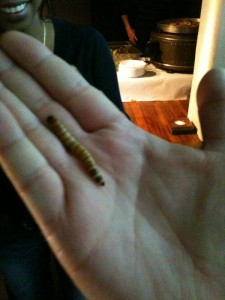

El blog-guía escrito por españoles en Bruselas para los hispanoparlantes que viven aquí y para los turistas que aprovechan los vuelos baratos para descubrir el chocolate, la cerveza, la Grand Place y tantas otras cosas buenas.
Categoría: Comunicación y marketing
Temas relacionados con la comunicación, el márketing y la publicidad. Esta categoría estaba más viva en la anterior versión del blog, cuando era más personal, y antes de que Ramón Suárez se decidiera a hacer un blog profesional sobre estos asuntos.
¡Qué lejos quedan esos tiempos en los que los hombres de verdad bebían cerveza de verdad! El tipo del cartel seguro que está jubilado y sus hijos preparando los papeles del paro… Vieux Temps es una cerveza de alta fermentación producida en Bruselas. Yo soy abstemio, así que poco más puedo añadir, pero el cartel me encantó: es tan retro.
El pasado 9 de febrero me entrevistaron Jorge y Alberto en Radio Almapara su programa Objetivo Bruselas. Tuvimos una buena charla sobre las bondades de esta ciudad con el pretexto de los primeros 500 mensajes de Blog Bruselas. Realmente me sorprendieron con la magdalena y la vela para celebrarlo 🙂
Buen estudio, buenos entrevistadores, buena coordinadora, y un muy buen rato.
El deseo lo mantengo: queremos más colaboradores en Blog Bruselas, más gente que quiera compartir su visión de la ciudad, de su vida aquí. Puedes ser un recién llegado o llevar mil años aquí: todas las visiones son interesantes porque nos ayudarán a descubrir y a ver la ciudad de una manera diferente.
Datos de audiencia no tengo, pero os puedo decir que subieron los fans de Blog Bruselas en Facebook y que me alegré de ver entre ellos algunas caras conocidas de las que hace tiempo no tenía noticias.
Una mujer, una pipa una camiseta. Inspiración bruseleño-Magritte-ista para una marca de camisetas de Lieja. Por si no controláis la lengua del sur de Bélgica, deciros que pipa en francés quiere decir exactamente eso un francés. Supongo que de ahí salió la idea de poner a esa janneke tan sanota entre tanta pierna de hombre. En España no sé sí duraría el anuncio, pero me da que no…
Mañana jueves hay Pecha Kucha Night en el Kaaitheater, uno de los teatros flamencos de Bruselas. En esta ocasión presentarán:
Marie Brouchot-Hus – Kanker Barak
Katja De Vries – virtual environments, second life
Guy Dittrich – Wallpaper* CityGuide Brussels
Anna Drozd / Bart Dujardin – Je m’en fish VZW
Ergün Erkoçu – Poldermoskee
Jaromil – computer coding and art, Amsterdam, dyne.org
Eric Joris – CREW, Double U, technology, art and theatre
Hugo Puttaert – Integrated Antwerp conference / addmagazine
Marc Rotenberg – Electronic Privacy Information Center
Ben Schouten – gaming
Bart Stevens – social software/ichoosr
Por si no lo conocési todavía, Pecha Kucha quiere decir bla, bla en japonés, que por allí se inventó el concepto. Se trata de una velada de presentaciones inspiradoras en diferentes campos, ligadas normalmente a la creatividad en cualquiera de sus formas. Presentan arquitectos, diseñadores, artista, economistas filósofos…
El formato de la presentación es fijo: 20 diapositivas que duran 20 segundos cada una. No se puede cambiar el ritmo, hay que adaptarse a él y no todos lo logran. Lo mejor es que como duran menos de siete minutos, si alguna aburre se pasa rápido. Y nada de pasarse de la raya, que te cortan la presentación y Alok Nandi te interrumpe sin contemplaciones, como debe ser. Últimamente está florido en los comentarios, da para reírse un rato.
Siempre hay alguna presentación o evento que te sorprende. En la última ocasión tuvimos la oportunidad de comer gusanos vivos y saltamontes fritos. Los gusanos no me gustaron mucho, pero me atreví con ellos (tengo testigos).

Lo más difícil es acostumbrarse a pronunciarlo más o menos bien, la mayoría tenemos tendencia a decir Pecha Kucha tal como se lée, cuando en realidad suena más a pechakcha.
Sí te interesa el lanzamiento de productos de Apple de esta noche, lo mejor que puedes hacer en Bruselas es venir al Café Numerique para compartir la presentación de Steve Jobs en directo con un montón de geeks. A partir de las 19h en el Mirano nos vamos a juntar una buena panda para disfrutar de la presentación, siempre las hace buenas, y rogando que se anuncie el producto que deseamos, en mi caso nuevos modelos de MacBook Pro y en el de un montón de Mac fanáticos el iTablet/iSlate.
Cómo la mayoría de sus presentaciones las habréis visto últimamente, aquí tenéis una antigua:
Hay que ver lo que ha evolucionado esto de la informática y la de pelo que ha perdido este hombre…
Hace un montón de años que no uso Mac más que esporádicamente, en concreto desde poco después de publicar mi libro sobre MacOS X Jaguar, pero creo que ha llegado el momento de cambiar de sistema operativo, al menos en parte.
No os lo perdáis esta noche, es una buena ocasión para tomarse unas cerves de buen rollo. Por si no lo conocéis todavía, el Café Numerique (o café digital en español) es un encuentro semanal para todos los públicos en el que se tratan temas relacionados con las nuevas tecnologías. Todo muy convivial. ¡Hasta la noche!


{kind=link}